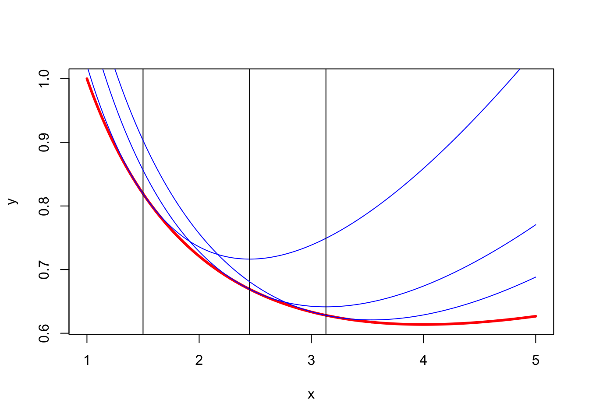

itel 1 2.5000000000 0.2055741244
itel 2 1.5505102572 0.0554992066
itel 3 0.8698308399 0.0144357214
itel 4 0.4615431837 0.0036822877
itel 5 0.2378427379 0.0009299530
itel 6 0.1207437506 0.0002336744
itel 7 0.0608344795 0.0000585677
itel 8 0.0305337787 0.0000146606
itel 9 0.0152961358 0.0000036675
itel 10 0.0076553935 0.0000009172
itel 11 0.0038295299 0.0000002293
itel 12 0.0019152235 0.0000000573
itel 13 0.0009577264 0.0000000143
itel 14 0.0004788919 0.0000000036
itel 15 0.0002394531 0.0000000009 1 Introduction
In this manual we study the smacof family of Multidimensional Scaling (MDS) techniques. In MDS the data consist of some type of information about the dissimilarities between a pairs of objects. These objects can be anything: individuals, variables, colors, locations, chemicals, molecules, works of Plato, political parties, Morse code signals, and so on. The dissimilarities can be approximate or imprecise distances, dissimilarity judgments, import/export tables, sociometric choices, and so on. They generally are distance-like, but we do not expect them to satisfy the triangle inequality, and in general not even non-negativity and symmetry. Similarities, such as confusion probabilities, correlations, or preferences, are always converted in some way or another to dissimilarities before they can serve as data for MDS.
The information we have about these dissimilarities can be numerical, ordinal, or categorical. Thus we may have the actual values of some or all of the dissimilarities, we may know their rank order, or we may have a classification of them into a small number of qualitative bins.
Let’s formalize this, and introduce some notation at the same time. The set of ojects is \(\mathfrak{O}\). For example, it can be the set of all cities with more than 10,000 inhabitants. In our MDS analysis we only use \(O:=(o_1,\cdots,o_n)\), an n-tuple (i.e. a finite sequence) of \(n\) different elements of \(\mathfrak{O}\), for example \(n\) capital cities selected from \(\mathfrak{O}\). If you want to, you can call \(O\) a sample from \(\mathfrak{O}\). It is entirely possible, however, that \(\mathfrak{O}\) has only \(n\) elements, in which case \(O\) is just an permutation of the elements of \(\mathfrak{O}\).
A dissimilarity is a function \(\delta\) on all pairs of objects, with values in a set \(\mathfrak{D}\). It can be, for example, the time in seconds for an airline flight from city one to city two. Thus \(\delta:\mathfrak{O}\otimes\mathfrak{O}\Rightarrow\mathfrak{D}\). A dissimilaritry is numerical if \(\mathfrak{D}\) is subset of real line, it is ordinal if \(\mathfrak{D}\) is a partially ordered set, and it is nominal if \(\mathfrak{D}\) is neither. Or a dissimilarty is nominal if \(\mathfrak{D}\) is any set, and we choose to ignore the ordinal and numerical information if it is there. No matter what \(\mathfrak{D}\) is, we suppose it always has the element \(\mathit{NA}\) to indicate missing dissimilarities. Cities may not have airports, for example, or we just don’t have the information about the airline distances. Define \(\delta_{ij}:=\delta(o_i,o_j)\) and \(\Delta:=\delta(O\times O)\). We can think of \(\Delta\) and an \(n\times n\) matrix with elements in \(\mathfrak{D}\).
MDS techniques map the objects \(o_i\) into points \(x_i\) in some metric space \(\langle\mathfrak{X},d\rangle\) in such a way that the distances between pairs of points approximate the dissimilarities of the corresponding pairs of objects. Thus we want to find a map \(x:\mathfrak{O}\rightarrow\mathfrak{X}\) that produces an n-tuple \(X=(x_1,\cdots,x_n)\) of elements of \(\mathfrak{X}\), where \(x_i:=x(o_i)\). Also define \(d_{ij}:=d(x_i,x_j)\) and \(D(X):=d(X\times X\). Unlike the dissimilarities the \(d_{ij}\) are always numerical, because distances are. So MDS finds \(X\) such that \(D(X)\approx\Delta\).
For numerical dissimilarities it is clear what “approximation” means, we simply want the distances and the corresponding dissimilarities to be numerically close. Because there are generally many dissimilarities and distances a combined measure of closeness can still be defined in many different ways. For ordinal and nominal dissimilarities the notion of approximation is less clear, and we have to develop more specialized techniques to measure how well the distances fit the dissimilarities.
2 Brief History
De Leeuw and Heiser (1980)
This section has a different emphasis. We limit ourselves to developments in Euclidean MDS, and to contributions with direct computational consequences that have a direct or indirect link to psychometrics, and to work before 1960. This is reviewed ably in the presidential address of W. S. Torgerson (1965).
Our history review takes the form of brief summaries of what we consider to be milestone papers or books.
2.1 Prehistory
The prehistory of MDS is defined as any publication before Young and Householder (1938).
stumpf 1883
Unter Distanzen aber verstehen wir, das Wort hier ebenfalls in einem für Manche ungewohnt weiten Sinne nehmend, nicht blos räumliche und zeitliche sondern auch qualitative und solche der Intensität, und definieren das Wort durch: Grade der Unähnlichkeit.
From the translation
Taking the word “distances” in a sense uncommonly broad for many, however, we mean here not only spatial and temporal ones, but also qualitative ones as well as ones of intensity, and define the word by degrees of dissimilarity.
fisher 1922 boyden 1932/1935 goldmeier 1937
richardson 1938 klingberg 1941 gulliksen 1946 attneave 1950 ekman 1954
torgerson 1951 torgerson 1952 messick_abelson 1956
reviewed in De Leeuw and Heiser (1980).
Young-Householder, etc.
2.2 Torgerson
2.3 Bell Laboratories
2.4 Guttman-Lingoes
Guttman (1968)
2.5 Alternating Least Squares
2.6 Majorization
De Leeuw (1977) De Leeuw and Heiser (1977)
There was some early work by Richardson, Messick, Abelson and Torgerson who combined Thurstonian scaling of similarities with the mathematical results of Schoenberg (1935) and Young and Householder (1938).
Despite these early contributions it makes sense, certainly from the point of view of my personal history, but probably more generally, to think of MDS as starting as a widely discussed, used, and accepted technique since the book by W. S. Torgerson (1958). This was despite the fact that in the fifties and sixties computing eigenvalues and eigenvectors of a matrix of size 20 or 30 was still a considerable challenge.
A few years later the popularity of MDS got a large boost by developments centered at Bell Telephone Laboratories in Murray Hill, New Jersey, the magnificent precursor of Silicon Valley. First there was nonmetric MDS by Shepard (1962a), Shepard (1962b) and Kruskal (1964a), Kruskal (1964b), And later another major development was the introduction of individual difference scaling by Carroll and Chang (1970) and Harshman (1970). Perhaps even more important was the development of computer implementations of these new techniques. Some of the early history of nonmetric MDS is in De Leeuw (2017a).
Around the same time there were interesting theoretical contributions in Coombs (1964), which however did not much influence the practice of MDS. ….. And several relatively minor variations of the Bell Laboratories approach were proposed by Guttman (1968), but Guttman’s influence on further MDS implementations turned out to be fairly localized and limited.
The main development in comptational MDS after the Bell Laboratories surge was probably smacof. Initially, in De Leeuw (1977), this stood for Scaling by Maximizing a Convex Function. Later it was also used to mean Scaling by Majorizing a Complicated Function. Whatever. In this book smacof just stands for smacof. No italics, no boldface, no capitals.
The first smacof programs were written in 1977 in FORTRAN at the Department of Data Theory in Leiden (Heiser and De Leeuw (1977)). Eventually they migrated to SPSS (for example, Meulman and Heiser (2012)) and to R (De Leeuw and Mair (2009)). The SPSS branch, now the IBM SPSS branch, and the R branch have diverged somewhat, and they continue to be developed independently.
Parallel to this book there is an attempt to rewrite the various smacof programs in C, with the necessary wrappers to call them from R (De Leeuw (2017b)). The C code, with makefiles and test routines, is at github.com/deleeuw/smacof
3 Basic MDS
Following Kruskal, and to a lesser extent Shepard, we measure the fit of distances to dissimilarities using an explicit real-valued loss function (or badness-of-fit measure), which is minimized over the possible maps of the objects into the metric space. This is a very general definition of MDS, covering all kinds of variations of the target metric space and of the way fit is measured. Obviously we will not discuss all these possible forms of MDS, which also includes various techniques more properly discussed as cluster analysis, classification, or discrimination.
To fix our scope we first define basic MDS, which is short for Least Squares Euclidean Metric MDS. It is defined as MDS with the following characteristics.
- The metric space is a Euclidean space.
- The dissimilarities are numerical, symmetric, and non-negative.
- The loss function is a weighted sum of squares of the residuals, which are the differences between dissimilarities and Euclidean distances.
- Weights are numerical, symmetric, and non-negative.
- Self-dissimilarities are zero and the corresponding terms in the loss function also have weight zero.
By a Euclidean space we mean a finite dimensional vector space, with addition and scalar multiplication, and with an inner product that defines the distances. For the inner product of vectors \(x\) and \(y\) we write \(\langle x,y\rangle\). The norm of \(x\) is defined as \(\|x\|:=\sqrt{\langle x,x\rangle}\), and the distance between \(x\) and \(y\) is \(d(x,y):=\|x-y\|\).
The loss function we use is called stress. It was first explicitly introduced in MDS as raw stress by Kruskal (1964a) and Kruskal (1964b). We define stress in a slightly different way, because we want to be consistent over the whole range of the smacof versions and implementations. In smacof stress is the real-valued function \(\sigma\), defined on the space \(\mathbb{R}^{n\times p}\) of configurations, as
\[\begin{equation} \sigma(X):=\frac14\sum_{i=1}^n\sum_{j=1}^n w_{ij}(\delta_{ij}-d_{ij}(X))^2. (\#eq:stressall) \end{equation}\]
Note that we use \(:=\) for definitions, i.e. for concepts and symbols that are not standard mathematical usage, when they occur for the first time in this book. Through the course of the book it will probably become clear why the mysterious factor \(\frac14\) is there. Clearly it has no influence on the actual minimization of the loss function.
In definition @ref(eq:stressall) we use the following objects and symbols.
- \(W=\{w_{ij}\}\) is a symmetric, non-negative, and hollow matrix of weights, where hollow means zero diagonal.
- \(\Delta=\{\delta_{ij}\}\) is a symmetric, non-negative, and hollow matrix of dissimilarities.
- \(X\) is an \(n\times p\) configuration, containing coordinates of \(n\) points in \(p\) dimensions.
- \(D(X)=\{d_{ij}(X)\}\) is a symmetric, non-negative, and hollow matrix of Euclidean distances between the \(n\) points in \(X\). Thus \(d_{ij}(X):=\sqrt{\sum_{s=1}^p(x_{is}-x_{js})^2}\).
Note that symmetry and hollowness of the basic objects \(W\), \(\Delta\), and \(D\) allows us carry out the summation of the weighted squared residuals in formula @ref(eq:stressall) over the upper (or lower) diagonal elements only. Thus we can also write \[\begin{equation} \sigma(X):=\frac12\mathop{\sum\sum}_{1\leq i<j\leq n} w_{ij}(\delta_{ij}-d_{ij}(X))^2. (\#eq:stresshalf) \end{equation}\] We use the notation \(\mathop{\sum\sum}_{1\leq i<j\leq n}\) for summation over the lower-diagonal elements of a matrix.
The function \(D\), which computes the distance matrix \(D(X)\) from a configuration \(X\), is matrix-valued. It maps the \(n\times p\)-dimensional configuration space \(\mathbb{R}^{n\times p}\) into the set \(D(\mathbb{R}^{n\times p})\) of Euclidean distance matrices between \(n\) points in \(\mathbb{R}^p\), which is a subset of the convex cone of hollow, symmetric, non-negative matrices in the linear space \(\mathbb{R}^{n\times n}\) (Datorro (2018)).
In basic MDS the weights and dissimilarities are given numbers, and we minimize stress over all \(n\times p\) configurations \(X\). Note that the dimensionality \(p\) is also supposed to be known beforehand, and that MDS in \(p\) dimensions is different from MDS in \(q\not= p\) dimensions. We sometimes emphasize this by writing \(pMDS\), which indicates that we will map the points into \(p\)-dimensional space.
Two boundary cases that will interest us are Unidimensional Scaling or UDS, where \(p=1\), and Full-dimensional Scaling or FDS, where \(p=n\). Thus UDS is 1MDS and FDS is nMDS. Most actual MDS applications in the sciences use 1MDS, 2MDS or 3MDS, because configurations in one, two, or three dimensions can easily be plotted with standard graphics tools. Note that MDS is not primarily a tool to tests hypotheses about dimensionality and to find meaningful dimensions. It is a mostly a mapping tool for data reduction, to graphically find interesting aspects of dissimilarity matrices.
The projections on the dimensions are usually ignored, it is the configuration of points that is the interesting outcome. This distinguishes MDS from, for example, factor analysis. There is no Varimax, Oblimax, Quartimax, and so on. Exceptions are confirmatory applications of MDS in genetic mapping along the chromosome, in archeological seriation, in testing psychological theories of cognition and representation, in the conformation of molecules, and in geographic and geological applications. In these areas the dimensionality and general structure of the configuration are given by prior knowledge, we just do not know the precise location and distances of the points. For more discussion of the different uses of MDS we refer to De Leeuw and Heiser (1982).
3.1 Kruskal’s stress
Definition @ref(eq:stressall) differs from Kruskal’s original stress in at least three ways: in Kruskal’s use of the square root, in our use of weights, and in our different approach to normalization.
We have paid so much attention to Kruskal’s original definition, because the choices made there will play a role in the normalization discussion in the ordinal scaling chapter (section @ref(nmdsnorm)), in the comparison of Kruskal’s and Guttman’s approach to ordinal MDS (sections @ref(nmdskruskal) and @ref(nmdsguttman)), and in our discussions about the differences between Kruskal’s stress @ref(eq:kruskalstressfinal) and smacof’s stress @ref(eq:stressall) in the next three sections of this chapter.
3.1.0.1 Square root
Let’s discuss the square root first. Using it or not using it does not make a difference for the minimization problem. Using the square root, however, does give a more sensible root-mean-square scale, in which stress is homogeneous of degree one, instead of degree two. But I do not want to compute all those unnecessary square roots in my algorithms, and I do not want to drag them along through my derivations. Moreover the square root potentially causes problems with differentiability at those \(X\) where \(\sigma(X)\) is zero. Thus, througout the book, we do not use the square root in our formulas and derivations. In fact, we do not even use it in our computer programs, except at the very last moment when we return the final stress after the algorithm has completed.
3.1.0.2 Weights
There were no weights \(W=\{w_{ij}\}\) in the original definition of stress by Kruskal (1964a), and neither are they there in most of the basic later contributions to MDS by Guttman, Lingoes, Roskam, Ramsay, or Young. We will use weights throughout the book, because they have various interesting applications within basic MDS, without unduly complicating the derivations and computations. In Groenen and Van de Velden (2016), section 6, the various uses of weights in the stress loss function are enumerated. They generously, and correctly, attribute the consistent use of weights in MDS to me. I quote from their paper:
- Handling missing data is done by specifying \(w_{ij} = 0\) for missings and 1 otherwise thereby ignoring the error corresponding to the missing dissimilarities.
- Correcting for nonuniform distributions of the dissimilarities to avoid dominance of the most frequently occurring dissimilarities.
- Mimicking alternative fit functions for MDS by minimizing Stress with \(w_{ij}\) being a function of the dissimilarities.
- Using a power of the dissimilarities to emphasize the fitting of either large or small dissimilarities.
- Special patterns of weights for specific models.
- Using a specific choice of weights to avoid nonuniqueness.
In some situations, for example for huge data sets, it is computationally convenient, or even necessary, to minimize the influence of the weights on the computations. We can use majorization to turn the problem from a weighted least squares problem to an iterative unweighted least squares problem. The technique, which we call unweighting, is discussed in detail in section @ref(minunweight).
3.1.0.3 Normalization
This section deals with a rather trivial problem, which has however caused problems in various stages of smacof’s 50-year development history. Because the problem is trivial, and the choices that must be made are to a large extent arbitrary, it has been overlooked and somewhat neglected.
In basic MDS we scale the weights and dissimilarities. It is clear that if we multiply the weights or dissimilarities by a constant, then the optimal approximating distances \(D(X)\) and the optimal configuration \(X\) will be multiplied by the same constant. That is exactly why Kruskal’s raw stress had to be normalized. Consequently we in basic MDS we always scale weights and dissimilarities by
\[\begin{align} \mathop{\sum\sum}_{1\leq i<j\leq n}w_{ij}&=1,(\#eq:scaldiss1)\\ \mathop{\sum\sum}_{1\leq i<j\leq n}w_{ij}^{\ }\delta_{ij}^2&=1.(\#eq:scaldiss2) \end{align}\]
This simplifies our formulas and makes them look better (see, for example, section @ref(propexpand) and section @ref(secrhostress)). It presupposes, of course, that \(w_{ij}\delta_{ij}\not=0\) for at least one \(i\not= j\), which we will happily assume in the sequel, because otherwise the MDS problem is trivial. Note that if all weights are equal (which we call the unweighted case) then they are equal to \(1/\binom{n}{2}\) and thus we require \(\mathop{\sum\sum}_{1\leq i<j\leq n}\delta_{ij}^2=\frac12n(n-1)\).
Using normalized dissimilarities amounts to the same defining stress as \[\begin{equation} \sigma(X)=\frac12\frac{\mathop{\sum\sum}_{1\leq i<j\leq n}w_{ij}(\delta_{ij}^2-d_{ij}(X))^2}{\mathop{\sum\sum}_{1\leq i<j\leq n}w_{ij}\delta_{ij}^2}. (\#eq:stressrat) \end{equation}\]
This is useful to remember when we discuss the various normalizations for non-metric MDS in section @ref(nmdsnorm).
3.2 Local and Global Minima
In basic MDS our goal is to compute both \(\min_X\sigma(X)\) and \(\mathop{\text{Argmin}}_X\sigma(X)\), where \(\sigma(X)\) is defined as @ref(eq:stressall), and where we minimize over all configurations in \(\mathbb{R}^{n\times p}\).
In this book we study both the properties of the stress loss function and a some of its generalizations, and the various ways to minimize these loss functions over configurations (and sometimes over transformations of the dissimilarities as well).
Emphasis local minima
Compute stationary points
3.3 Partitioning Loss
4 Generalizations
The most important generalizations of basic MDS we will study in later chapters of this book are discussed briefly in the following sections.
4.1 Non-linear MDS
4.2 Non-metric MDS
Basic MDS is a form of Metric Multidimensional Scaling or MMDS, in which dissimilarities are either known or missing. In chapter @ref(nonmtrmds) we relax this assumption. Dissimilarities may be partly known, for example we may know they are in some interval, we may only know their order, or we may know them up to some smooth transformation. MDS with partly known dissimilarities is Non-metric Multidimensional Scaling or NMDS. Completely unknown (missing) dissimilarities are an exception, because we can just handle this in basic MDS by setting the corresponding weights equal to zero.
In NMDS we minimize stress over all configurations, but also over the unknown dissimilarities. What we know about them (the interval they are in, the transformations that are allowed, the order they are in) defines a subset of the space of non-negative, hollow, and symmetric matrices. Any matrix in that subset is a matrix of what Takane, Young, and De Leeuw (1977) call disparities, i.e. imputed dissimilarities. The imputation provides the missing information and transforms the non-numerical information we have about the dissimilarities into a numerical matrix of disparities. Clearly this is an optimistic imputation, in the sense that it chooses from the set of admissible disparities to minimize stress (for a given configuration).
One more terminological point. Often non-metric is reserved for ordinal MDS, in which we only know a (partial or complete) order of the dissimilarities. Allowing linear or polynomial transformations of the dissimilarities, or estimating an additive constant, is then supposed to be a form of metric MDS. There is something to be said for that. Maybe it makes sense to distinguish non-metric in the wide sense (in which stress must be minimized over both \(X\) and \(\Delta\)) and non-metric in the narrow sense in which the set of admissible disparities is defined by linear inequalities. Nonmetric in the narrow sense will also be called ordinal MDS or OMDS.
It is perhaps useful to remember that Kruskal (1964a) introduced explicit loss functions in MDS to put the somewhat heuristic NMDS techniques of Shepard (1962a) onto a firm mathematical and computational foundation. Thus, more or less from the beginning of iterative least squares MDS, there was a focus on non-metric rather than metric MDS, and this actually contributed a great deal to the magic and success of the technique. In this book most of the results are derived for basic MDS, which is metric MDS, with non-metric MDS as a relatively straightforward extension not discussed until chapter @ref(nonmtrmds). So, at least initially, we take the numerical values of the dissimilarities seriously, as do W. S. Torgerson (1958) and Shepard (1962a), Shepard (1962b).
It may be the case that in the social and behavioural sciences only the ordinal information in the dissimilarities is reliable and useful. But, since 1964, MDS has also been applied in molecular conformation, chemometrics, genetic sequencing, archelogical seriation, and in network design and location analysis. In these areas the numerical information in the dissimilarities is usually meaningful and should not be thrown out right away. Also, the use of the Shepard plot, with dissimilarities on the horizontal axis and fitted distances on the vertical axis, suggests there is more to dissimilarities than just their rank order.
4.3 Fstress and Friends
Instead of defining the residuals in the least squares loss function as \(\delta_{ij}-d_{ij}(X)\) chapter @ref(chrstress) discusses the more general cases where the residuals are \(f(\delta_{ij})-g(d_{ij}(X))\) for some known non-negative increasing function \(f\). This defines the fstress loss function.
If \(f(x)=x^r\) with \(r>0\) then fstress is called rstress. Thus stress is rstress with \(r=1\), also written as 1stress or \(\sigma_1\). In more detail we will also look at \(r=2\), which is called sstress by Takane, Young, and De Leeuw (1977). In chapter @ref(chsstressstrain) we look at the problem of minimizing sstress and weighted version strain. The case of rstress with \(r\rightarrow 0\) is also of interest, because it leads to the loss function in Ramsay (1977).
4.4 Constraints
Instead of minimizing stress over all \(X\) in \(\mathbb{R}^{n\times p}\) we will look in chapter @ref(cmds) at various generalizations where minimization is over a subset \(\mathcal{\Omega}\) of \(\mathbb{R}^{n\times p}\). This is often called Constrained Multidimensional Scaling or CMDS.
The distinction may be familiar from factor analysis, where we distinguish between exploratory and confirmatory factor analysis. If we have prior information about the parameters then incorporating that prior information in the analysis will generally lead to more precise and more interpretable estimates. The risk is, of course that if our prior information is wrong, if it is just prejudice, then we will have a solution which is precise but incorrect. We have the famous trade-off between bias and variance. In MDS this trade-off does not seem to apply directly, because the necessary replication frameworks are missing.
and we do not attach much value to locating the true configuration.
Primal and Dual
\[ \min_{X\in\Omega}\sigma(X) \]
\[ \min_X\sigma(X)+\lambda\kappa(X,\Omega) \] where \(\kappa(X,\Omega)\geq 0\) and \(\kappa(X,\Omega)=0\) if and only if \(X\in\Omega\).
4.5 Individual Differences
Now consider the situation in which we have \(m\) different dissimilarity matrices \(\Delta_k\) and \(m\) different weight matrices \(W_k\). We generalize basic MDS by defining \[\begin{equation} \sigma(X_1,\cdots,X_m):=\frac12\sum_{k=1}^m\mathop{\sum\sum}_{1\leq i<j\leq n}w_{ijk}(\delta_{ijk}-d_{ij}(X_k))^2, (\#eq:replistress) \end{equation}\] and minimize this over the \(X_k\).
There are two simple ways to deal with this generalization. The first is to put no further constraints on the \(X_k\). This means solving \(m\) separate basic MDS problems, one for each \(k\). The second way is to require that all \(X_k\) are equal. As shown in more detail in section @ref(indifrepl) this reduced to a single basic MDS problem with dissimilarities that are a weighted sum of the \(\Delta_k\). So both these approaches do not really bring anything new.
Minimizing @ref(eq:replistress) becomes more interesting if we constrain the \(X_k\) in various ways. Usually this is done by making sure they have a component that is common to all \(k\) and a component that is specific or unique to each \(k\). This approach, which generalizes constrained MDS, is discussed in detail in chapter @ref(chindif).
4.6 Asymmetry
We have seen in section @ref(datasym) of this chapter that in basic MDS the assumption that \(W\) and \(\Delta\) are symmetric and hollow can be made without loss of generality. The simple partitioning which proved this was based on the fact that \(D(X)\) is always symmetric and hollow. By the way, the assumption that \(W\) and \(D\) are non-negative cannot be made without loss of generality, as we will see below.
In chapter @ref(asymmds) we relax the assumption that \(D(X)\) is symmetric (still requiring it to be non-negative and hollow). This could be called Asymmetric MDS, or AMDS. I was reluctant at first to include this chapter, because asymmetric distances do not exist. And certainly are not Euclidean distances, so they are not covered by the title of this book. But as long as we stay close to Euclidean distances, least squares, and the smacof approach, I now feel reasonably confident the chapter is not too much of a foreign body.
4.7 Non-Euclidean Distances
When Kruskal introduced gradient-based methods to minimize stress he also discussed the possibility to use Minkovski metrics other than the Euclidean metric. This certainly was part of the appeal of the new methods, in fact it seemed as if the gradient methods made it possible to use any distance function whatsoever. This initial feeling of empowerment was somewhat naive, because it ignored the seriousness of the local minimum problem, the combinatorial nature of one-dimensional and city block scaling, the problems with nonmetric unfolding, and the problematic nature of gradient methods if the distances are not everywhere differentiable. All these complications will be discussed in this book. But it made me decide to ignore Minkovski distances (and hyperbolic and elliptic non-Euclidean distances), because life with stress is complicated and challenging enough as it is.
5 Principles of Algorithm Constuction
5.1 Alternating Least Squares
5.2 Majorization
5.3 Introduction to Majorization
Majorization, these days better known as MM (Lange (2016)), is a general approach for the construction of minimization algorithms. There is also minorization, which leads to maximization algorithms, which explains the MM acronym: minorization for maximization and majorization for minimization.
Before the MM principle was formulated as a general approach to algorithm construction there were some important predecessors. Major classes of MM algorithms avant la lettre were the EM Algorithm for maximum likelihood estimation of Dempster, Laird, and Rubin (1977), the Smacof Algorithm for MDS of De Leeuw (1977), the Generalized Weiszfeldt Method* of Vosz and Eckhardt (1980), and the Quadratic Approximation Method of Böhning and Lindsay (1988). The first formulation of the general majorization principle seems to be De Leeuw (1994).
Let’s start with a brief introduction to majorization. Minimize a real valued function \(\sigma\) over \(x\in\mathbb{S}\), where \(\mathbb{S}\) is some subset of \(\mathbb{R}^n\). There are obvious extensions of majorization to functions defined on more general spaces, with values in any partially ordered set, but we do not need that level of generality in this manual. Also majorization applied to \(\sigma\) is minorization applied to \(-\sigma\), so concentrating on majorization-minimization and ignoring minorization-maximization causes no loss of generality
Suppose there is a real-valued function \(\omega\) on \(\mathbb{S}\otimes\mathbb{S}\) such that \[\begin{align} \sigma(x)&\leq\omega(x,y)\qquad\forall x,y\in\mathbb{S},\label{eq-maj1}\\ \sigma(x)&=\omega(x,x)\qquad\forall x\in\mathbb{S}.\label{eq-maj2} \end{align}\] The function \(\omega\) is called a majorization scheme for \(\sigma\) on \(S\). A majorization scheme is strict if \(\sigma(x)<\omega(x,y)\) for all \(x,y\in S\) withj \(x\not=y\).
Define \[ x^{(k+1)}\in\mathop{\text{argmin}}_{x\in\mathbb{S}}\omega(x,x^{(k)}), \tag{5.1}\] assuming that \(\omega\) attains its (not necessarily unique) minimum over \(x\in\mathbb{S}\) for each \(y\). If \(x^{(k)}\in\mathop{\text{argmin}}_{x\in\mathbb{S}}\omega(x,x^{(k)})\) then we stop.
By majorization property \(\eqref{eq-maj1}\) \(\sigma(x^{(k+1)})\leq\omega(x^{(k+1)},x^{(k)})\). Because we did not stop update rule Equation 5.1 implies \(\omega(x^{(k+1)},x^{(k)})<\omega(x^{(k)},x^{(k)})\). and finally by majorization property \(\eqref{eq-maj2}\) \(\omega(x^{(k)},x^{(k)})=\sigma(x^{(k)})\).
If the minimum in Equation 5.1 is attained for a unique \(x\) then \(\omega(x^{(k+1)},x^{(k)})<\omega(x^{(k)},x^{(k)})\). If the majorization scheme is strict then \(\sigma(x^{(k+1)})<\omega(x^{(k+1)},x^{(k)})\). Under either of these two additional conditions \(\sigma(x^{(k+1)})<\sigma(x^{(k)})\), which means that the majorization algorithm is a monotone descent algorithm, and if \(\sigma\) is bounded below on \(\mathbb{S}\) the sequence \(\sigma(x^{(k)})\) converges.
Note that we only use the order relation to prove convergence of the sequence of function values. To prove convergence of the \(x^{(k)}\) we need stronger compactness and continuity assumptions to apply the general theory of Zangwill (1969). For such a proof the argmin in update formula Equation 5.1 can be generalized to \(x^{(k+1)}=\phi(x^{(k)})\), where \(\phi\) maps \(\mathbb{S}\) into \(\mathbb{S}\) such that \(\omega(\phi(x),x)\leq\sigma(x)\) for all \(x\).
We give a small illustration in which we minimize \(\sigma\) with \(\sigma(x)=\sqrt{x}-\log{x}\) over \(x>0\). Obviously we do not need majorization here, because solving \(\mathcal{D}\sigma(x)=0\) immediately gives \(x=4\) as the solution we are looking for.
To arrive at this solution using majorization we start with \[\begin{equation} \sqrt{x}\leq\sqrt{y}+\frac12\frac{x-y}{\sqrt{y}}, (\#eq:sqrtmaj) \end{equation}\] which is true because a differentiable concave function such as the square root is majorized by its tangent everywhere. Inequality @ref(eq:sqrtmaj) implies \[\begin{equation} \sigma(x)\leq\eta(x,y):=\sqrt{y}+\frac12\frac{x-y}{\sqrt{y}}-\log{x}. (\#eq:examplemaj) \end{equation}\] Note that \(\eta(\bullet,y)\) is convex in its first argument for each \(y\). We have \(\mathcal{D}_1\eta(x,y)=0\) if and only if \(x=2\sqrt{y}\) and thus the majorization algorithm is \[\begin{equation} x^{(k+1)}=2\sqrt{x^{(k)}} (\#eq:examplealg) \end{equation}\] The sequence \(x^{(k)}\) converges monotonically to the fixed point \(x=2\sqrt{x}\), i.e. to \(x=4\). If \(x^{(0)}<4\) the sequence is increasing, if \(x^{(0)}<4\) it is decreasing. Also, by l’Hôpital, \[\begin{equation} \lim_{x\rightarrow 4}\frac{2\sqrt{x}-4}{x-4}=\frac12 (\#eq:hopi1) \end{equation}\] and thus convergence to the minimizer is linear with asymptotic convergence rate \(\frac12\). By another application of l’Hôpital \[\begin{equation} \lim_{x\rightarrow 4}\frac{\sigma(2\sqrt{x)})-\sigma(4)}{\sigma(x)-\sigma(4)}=\frac14, (\#eq:hopi2) \end{equation}\] and convergence to the minimum is linear with asymptotic convergence rate \(\frac14\). Linear convergence to the minimizer is typical for majorization algorithms, as is the twice-as-fast linear convergence to the minimum value.
This small example is also of interest, because we minimize a DC function, the difference of two convex functions. In our example the convex functions are minus the square root and minus the logarithm. Algorithms for minimizing DC functions define other important subclasses of MM algorithms, the DC Algorithm of Tao Pham Dinh (see Le Thi and Tao (2018) for a recent overview), the Concave-Convex Procedure of Yuille and Rangarajan (2003), and the Half-Quadratic Method of Donald Geman (see Niikolova and Ng (2005) for a recent overview). For each of these methods there is a huge literature, with surprisingly little non-overlapping literatures. The first phase of the smacof algorithm, in which we improve the configuration for given disparities, is DC, concave-convex, and half-quadratic.
In the table below we show convergence of @ref(eq:examplealg) starting at \(x=1.5\). The first column show how far \(x^{(k)}\) deviates from the minimizer (i.e. from 4), the second shows how far\(\sigma(x^{(k)})\) deviates from the minimum (i.e. from \(2-\log 4\)). We clearly see the convergence rates \(\frac12\) and \(\frac14\) in action.
The first three iterations are shown in the figure below. The vertical lines indicate the value of \(x\), function is in red, and the first three majorizations are in blue.

Böhning, D., and B. G. Lindsay. 1988. “Monotonicity of Quadratic-approximation Algorithms.” Annals of the Institute of Statistical Mathematics 40 (4): 641–63.
Carroll, J. D., and J. J. Chang. 1970. “Analysis of Individual Differences in Multidimensional scaling via an N-way generalization of "Eckart-Young" Decomposition.” Psychometrika 35: 283–319.
Coombs, C. H. 1964. A Theory of Data. Wiley.
Datorro, J. 2018. Convex Optimization and Euclidean Distance Geometry. Second Edition. Palo Alto, CA: Meebo Publishing. https://ccrma.stanford.edu/~dattorro/0976401304.pdf.
De Leeuw, J. 1977. “Applications of Convex Analysis to Multidimensional Scaling.” In Recent Developments in Statistics, edited by J. R. Barra, F. Brodeau, G. Romier, and B. Van Cutsem, 133–45. Amsterdam, The Netherlands: North Holland Publishing Company.
———. 1994. “Block Relaxation Algorithms in Statistics.” In Information Systems and Data Analysis, edited by H. H. Bock, W. Lenski, and M. M. Richter, 308–24. Berlin: Springer Verlag. https://jansweb.netlify.app/publication/deleeuw-c-94-c/deleeuw-c-94-c.pdf.
———. 2017a. “Shepard Non-metric Multidimensional Scaling.” 2017. https://jansweb.netlify.app/publication/deleeuw-e-17-e/deleeuw-e-17-e.pdf.
———. 2017b. “Tweaking the SMACOF Engine.” 2017. https://jansweb.netlify.app/publication/deleeuw-e-17-p/deleeuw-e-17-p.pdf.
De Leeuw, J., and W. J. Heiser. 1977. “Convergence of Correction Matrix Algorithms for Multidimensional Scaling.” In Geometric Representations of Relational Data, edited by J. C. Lingoes, 735–53. Ann Arbor, Michigan: Mathesis Press.
———. 1980. “Multidimensional Scaling with Restrictions on the Configuration.” In Multivariate Analysis, Volume V, edited by P. R. Krishnaiah, 501–22. Amsterdam, The Netherlands: North Holland Publishing Company.
———. 1982. “Theory of Multidimensional Scaling.” In Handbook of Statistics, Volume II, edited by P. R. Krishnaiah and L. Kanal. Amsterdam, The Netherlands: North Holland Publishing Company.
De Leeuw, J., and P. Mair. 2009. “Multidimensional Scaling Using Majorization: SMACOF in R.” Journal of Statistical Software 31 (3): 1–30. https://www.jstatsoft.org/article/view/v031i03.
Dempster, A. P., N. M. Laird, and D. B. Rubin. 1977. “Maximum Likelihood for Incomplete Data via the EM Algorithm.” Journal of the Royal Statistical Society B39: 1–38.
Groenen, P. J. F., R. Mathar, and W. J. Heiser. 1995. “The Majorization Approach to Multidimensional Scaling for Minkowski Distances.” Journal of Classification 12: 3–19.
Groenen, P. J. F., and M. Van de Velden. 2016. “Multidimensional Scaling by Majorization: A Review.” Journal of Statistical Software 73 (8): 1–26. https://www.jstatsoft.org/index.php/jss/article/view/v073i08.
Guttman, L. 1968. “A General Nonmetric Technique for Fitting the Smallest Coordinate Space for a Configuration of Points.” Psychometrika 33: 469–506.
Harshman, R. A. 1970. “Foundations of the PARAFAC Procedure.” Working Papers in Phonetics 16. UCLA.
Heiser, W. J., and J. De Leeuw. 1977. “How to Use SMACOF-I.” Department of Data Theory FSW/RUL.
Kruskal, J. B. 1964a. “Multidimensional Scaling by Optimizing Goodness of Fit to a Nonmetric Hypothesis.” Psychometrika 29: 1–27.
———. 1964b. “Nonmetric Multidimensional Scaling: a Numerical Method.” Psychometrika 29: 115–29.
Lange, K. 2016. MM Optimization Algorithms. SIAM.
Le Thi, H. A., and P. D. Tao. 2018. “DC Programming and DCA: Thirty Years of Developments.” Mathematical Programming, Series B.
Mathar, R., and R. Meyer. 1994. “Algorithms in Convex Analysis to Fit l_p -Distance Matrices.” Journal of Multivariate Analysis 51: 102–20.
Meulman, J. J., and W. J. Heiser. 2012. IBM SPSS Categories 21. IBM Corporation.
Niikolova, M., and M. Ng. 2005. “Analysis of Half-Quadratic Minimization Methods for Signal and Image Recovery.” SIAM Journal Scientific Computing 27 (3): 937–66.
Ramsay, J. O. 1977. “Maximum Likelihood Estimation in Multidimensional Scaling.” Psychometrika 42: 241–66.
Schoenberg, I. J. 1935. “Remarks to Maurice Frechet’s article: Sur la Definition Axiomatique d’une Classe d’Espaces Vectoriels Distancies Applicables Vectoriellement sur l’Espace de Hllbert.” Annals of Mathematics 36: 724–32.
Shepard, R. N. 1962a. “The Analysis of Proximities: Multidimensional Scaling with an Unknown Distance Function. I.” Psychometrika 27: 125–40.
———. 1962b. “The Analysis of Proximities: Multidimensional Scaling with an Unknown Distance Function. II.” Psychometrika 27: 219–46.
Takane, Y., F. W. Young, and J. De Leeuw. 1977. “Nonmetric Individual Differences in Multidimensional Scaling: An Alternating Least Squares Method with Optimal Scaling Features.” Psychometrika 42: 7–67.
Torgerson, W. S. 1958. Theory and Methods of Scaling. New York: Wiley.
Torgerson, W. S. 1952. “Multidimensional Scaling: I. Theory and Method.” Psychometrika 17 (4): 401–19.
———. 1965. “Multidimensional Scaling of Similarity.” Psychometrika 30 (4): 379–93.
Vosz, H., and U. Eckhardt. 1980. “Linear Convergence of Generalized Weiszfeld’s Method.” Computing 25: 243–51.
Young, G., and A. S. Householder. 1938. “Discussion of a Set of Points in Terms of Their Mutual Distances.” Psychometrika 3 (19-22).
Yuille, A. L., and A. Rangarajan. 2003. “The Concave-Convex Procedure.” Neural Computation 15: 915–36.
Zangwill, W. I. 1969. Nonlinear Programming: a Unified Approach. Englewood-Cliffs, N.J.: Prentice-Hall.